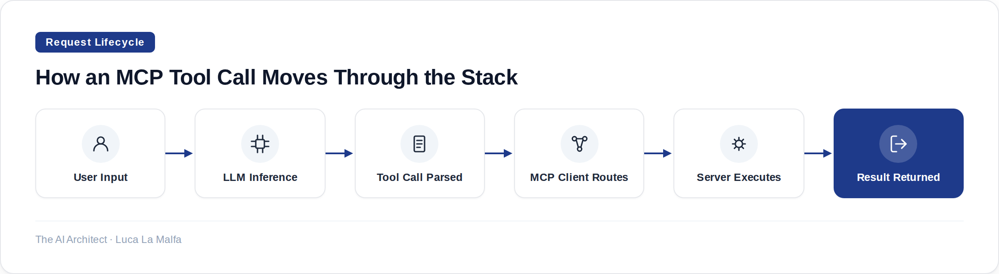

MCP gives AI agents a structured way to talk to external tools — here's how it actually works and when to use it.
September 29, 2026
Three years ago, every team building an AI integration invented their own protocol. Tool A exposed a REST endpoint with one schema. Tool B used a custom JSON envelope. Tool C required a hand-rolled adapter that lived in a utils folder no one wanted to touch. The model sat in the middle, and every new capability meant another bespoke glue layer. This is still the default in most enterprise projects I walk into. It's not a disaster — it works — but the maintenance cost compounds quietly until someone proposes a rewrite.
Model Context Protocol (MCP) is Anthropic's attempt to stop that pattern before it calcifies further. The idea is simple enough to fit on a whiteboard: define one open protocol that any host (your AI application) can use to talk to any server (a tool, a data source, an API), so that the adapter problem is solved once, not once per integration. Whether it actually delivers on that depends on how you use it, and there are real constraints worth understanding before you commit to it.
At its core, MCP is a client-server protocol running over JSON-RPC 2.0. The host is the process that runs the LLM — your application. The client is a component inside the host that manages connections. The server is a lightweight process that exposes capabilities: tools the model can call, resources it can read, and prompts it can request. Servers can run locally as child processes (stdio transport) or remotely over HTTP with Server-Sent Events. The model never talks to the MCP server directly — it issues a tool call in its normal output, the host intercepts it, routes it through the MCP client, and returns the result as context. From the model's perspective, it's just function calling with a well-defined schema on the other side.
The three primitive types matter more than they first appear. Tools are model-invoked — the LLM decides when to call them, which means they need tight, unambiguous descriptions or you'll get hallucinated arguments and failed calls. Resources are application-controlled — the host decides what context to inject, not the model. Prompts are user-controlled templates that servers can expose. Getting this distinction wrong is the most common architectural mistake I see: people expose everything as a tool when most of their data access would be better served as a resource, keeping the model out of the routing decision entirely.

The protocol version negotiation at connection startup is one of those details that looks like boilerplate until it bites you. When a client connects, both sides exchange their supported protocol version and capability sets. If your host supports sampling and your server doesn't declare it, sampling calls will silently fail or error depending on implementation. This means upgrading an MCP server is not always a drop-in replacement — you need to verify capability alignment, especially if you're mixing servers from different authors or updating the reference SDK. In a multi-server setup (which is the common production case), you also need to think about tool name collisions across servers. There's no namespace enforcement in the protocol itself; that's your problem to handle in the host layer.
Security is the other place where MCP's openness creates real work. Because any MCP server can expose tools that execute code, read files, or call external APIs, the attack surface expands with every server you add. Prompt injection through malicious resource content is a documented risk — a resource that returns text designed to override the model's instructions is not a theoretical concern. The practical mitigations are: run servers with minimal OS permissions, validate and sanitize resource content before it enters the context window, and be selective about which servers you trust in multi-tenant environments. MCP doesn't solve this for you; it just gives you a consistent place to enforce it.
How I actually deploy this
In client engagements, I almost never start with a custom MCP server. I start with the reference implementations — filesystem, fetch, a database connector — and wire them up to see what the model actually does with them in realistic sessions. That empirical phase tells me where the tool descriptions need tightening and where a resource would have been smarter than a tool. Only after that do I write custom servers for proprietary systems. The other rule I hold: one MCP server per bounded domain. A server that does file I/O, database queries, and API calls is a maintenance liability dressed up as convenience.
modelcontextprotocol/servers — Reference implementations and community MCP servers.
Inspired by Language Models for Text Classification: From Bag-of-Words to Jev (Sebastian Raschka)